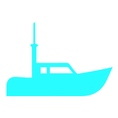

网内成员状态
工作状态：正常
当前系统时间：
| 平台编识号 | 平台名称 | 平台类型 | 通信距离 | 误码率 | 所属链路 | 链路质量 |
|---|---|---|---|---|---|---|
| 16380 | 歼-11 | 空中 | 1208km | 12.4% | 优 | |
| 16381 | 装甲车 | 陆地 | 4208km | 3.4% | 优 | |
| 16382 | 护卫舰 | 水面 | 3208km | 4.4% | 优 | |
| 16382 | 护卫舰 | 水面 | 1208km | 2.41% | 优 | |
| 16382 | 护卫舰 | 水面 | 2208km | 2.21% | 优 |